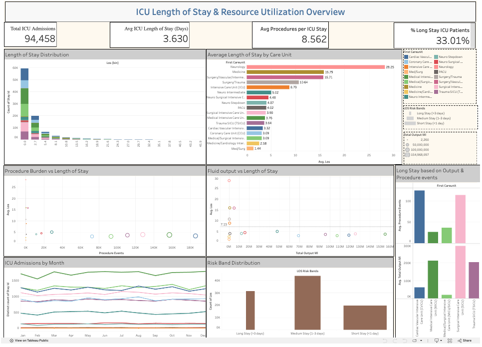
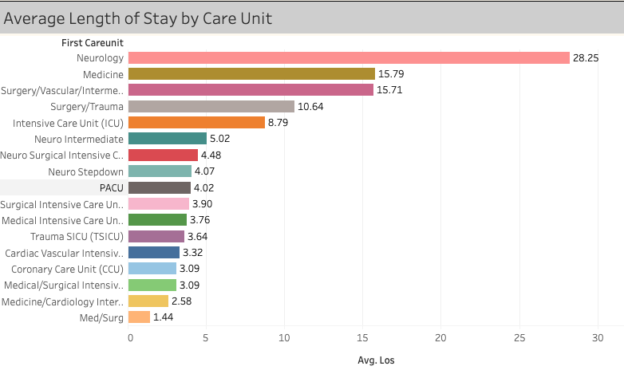

Selected questions relevant to ICU utilization and patient flow.
← Back to featured projects
Healthcare Analytics
ICU Analytics
Using Google BigQuery and Tableau
A healthcare data analysis project exploring ICU admissions, length of stay, patient characteristics, and operational patterns using SQL and BigQuery.

01 · Overview
Understanding ICU performance through data
This project examines intensive-care data to identify patterns in patient admissions, length of stay, resource use, and clinical outcomes.
The goal was to demonstrate how healthcare data can be transformed into understandable operational metrics that may support planning and decision-making.
02 · Business problem
The challenge
ICU data can be large and complex. Without focused reporting, it can be difficult to understand which units experience longer stays, when admission volumes increase, and where additional operational review may be needed.
Questions explored
- How do ICU admission volumes change over time?
- Which ICU units have longer average stays?
- What patient characteristics appear frequently?
- Which operational KPIs should be monitored?
03 · My role
What I contributed
- Defined the analytical questions and KPIs.
- Queried healthcare tables in Google BigQuery.
- Reviewed missing, duplicate and inconsistent values.
- Calculated admission and length-of-stay metrics.
- Translated results into dashboard-ready findings.
- Documented limitations and recommendations.
04 · Data
Dataset and preparation
Dataset name: MIMIC-III (Medical Information Mart for Intensive Care III)
Preparation tasks
- Selected relevant admission and ICU fields.
- Validated date and time values.
- Checked for null and duplicate records.
- Created calculated length-of-stay measures.
- Grouped results by unit and admission period.
05 · Approach
Analysis process
Reviewed data quality and selected the necessary tables and fields.
Used SQL aggregations, joins and calculated measures.
Organized KPIs and findings for a stakeholder-friendly dashboard.
06 · Key insights
What the analysis revealed
- Admission volumes differed across ICU units.
- Average length of stay varied by unit and patient group.
- Some periods showed greater resource demand.
- Unit-level monitoring provided more context than one hospital-wide average.

Average Length of Stay by Care Unit was the most important visual because it revealed substantial variation across ICU units. Neurology showed the highest average stay at approximately 28.25 days, while several surgical units also exceeded the overall ICU average of 3.63 days. This suggests that length-of-stay monitoring should be performed by care unit rather than relying only on a hospital-wide average.
07 · Recommendations
Actions supported by the findings
- Monitor length of stay separately by ICU unit.
- Review high-volume admission periods during staffing discussions.
- Track consistent KPI definitions across reports.
- Investigate unusually long stays before drawing conclusions.
08 · Reflection
What I learned
This project strengthened my ability to query healthcare data in BigQuery, create operational metrics, recognize data-quality limitations, and communicate results without overstating clinical conclusions.